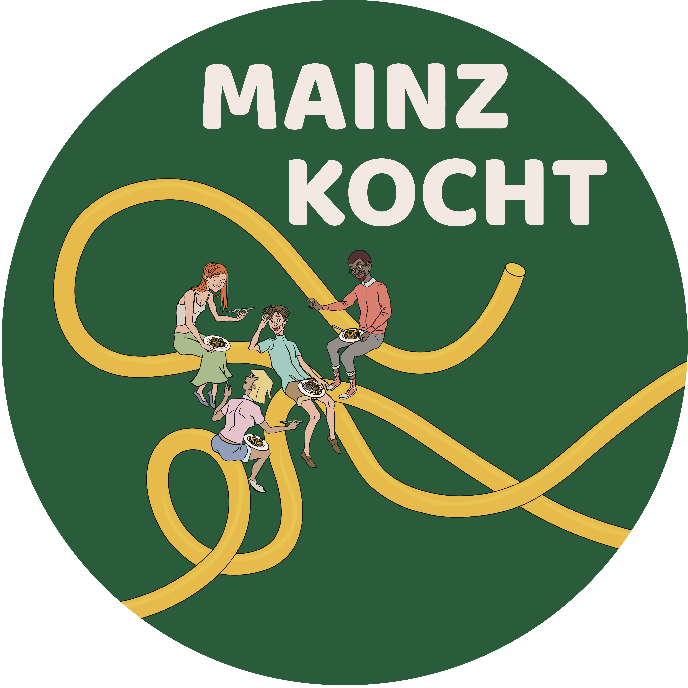
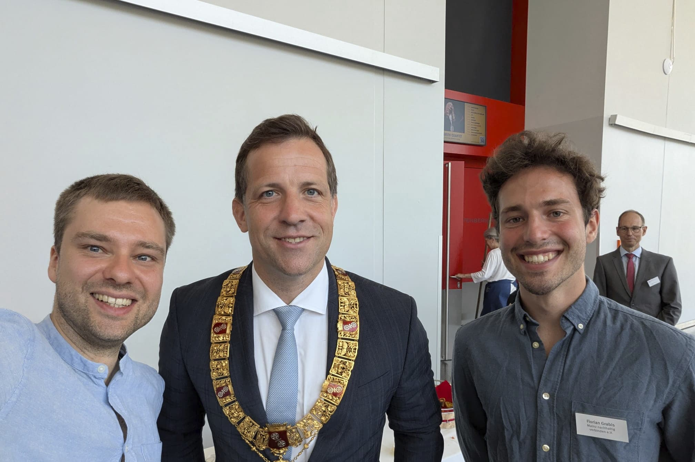

Florian Grabis
Ich bin Lehramtsstudent und freue mich auf mein Praktikum am Bischöflichen Willigis Gymnasium.
Auf dieser Webseite können Sie zwar kein Geld, aber immerhin einen Eindruck von mir gewinnen.
Ich bin Lehramtsstudent und freue mich auf mein Praktikum am Bischöflichen Willigis Gymnasium.
Auf dieser Webseite können Sie zwar kein Geld, aber immerhin einen Eindruck von mir gewinnen.
Ich studiere seit dem Sommersemester 2021 Informatik und Philosophie auf Gymnasiallehramt an der Johannes-Gutenberg Universität Mainz. In der Philosophie begeistern mich besonders praktische Fragen, die sich mit dem guten Handeln des Menschen beschäftigen, also der Teilbereich Ethik. In der Informatik interessiere ich mich besonders für das Programmieren, da dort Schüler*innen die Effekte ihres Codes schnell überprüfen können und so Selbstwirksamkeit erfahren.
Zusätzlich zum Studium absolviere ich das Zukunftszertifikat der Uni Mainz, welches die Möglichkeit bietet, sich intensiv mit den Themen Nachhaltigkeit und Klimaschutz auseinanderzusetzen.
Seit November 2025 arbeite ich zudem als PES Kraft in der IGS Mainz-Bretzenheim im "Maker Space". Dort wird unter anderem durch Lego-Roboter, 3D-Drucker und einen Greenscreen Schüler*innen die Gelegenheit geboten, sich mit digitalen und technischen Geräten auseinanderzusetzen und dabei ihr Informatikwissen und ihre Medienkompetenz zu stärken.

Ich kann mich in meiner Freizeit für diese unterschiedlichen Aktivitäten begeistern:
Seit Dezember 2023 engagiere ich mich ehrenamtlich in der Initiative Mainz kocht!, welche zweimal im Jahr ein kostenloses Event im Running Dinner Format für alle Mainzer*innen anbietet. Wir erhoffen uns Raum für Austausch und Begegnung zu schaffen und somit niederschwellig beim gemeinsamen Essen Barrieren zwischen Alter, kultureller Herkunft und politischer Orientierung abzubauen.
Aus der Initiative hat sich zudem der gemeinnützige Verein Mainz nachhaltig verbinden e.V. entwickelt, in dem ich mich seit Februar 2025 als Teil des Vorstands engagiere.

